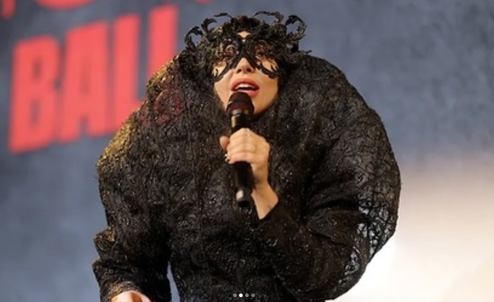
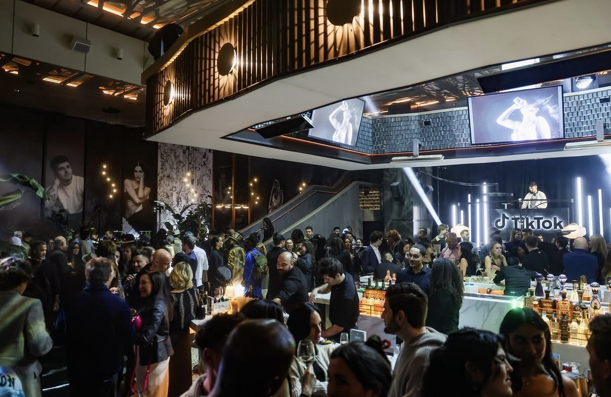
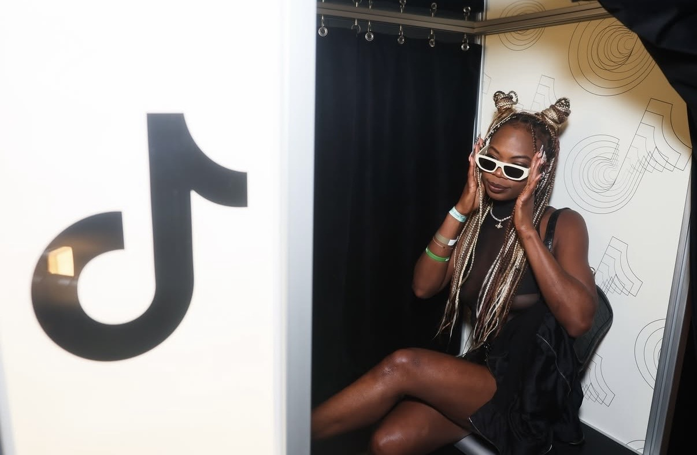
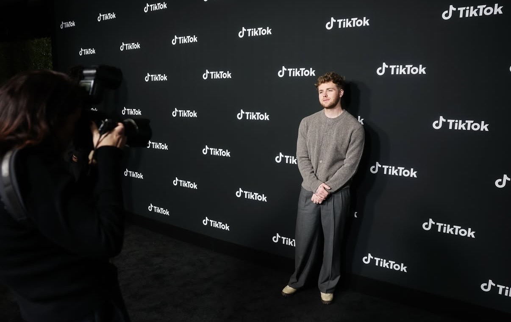
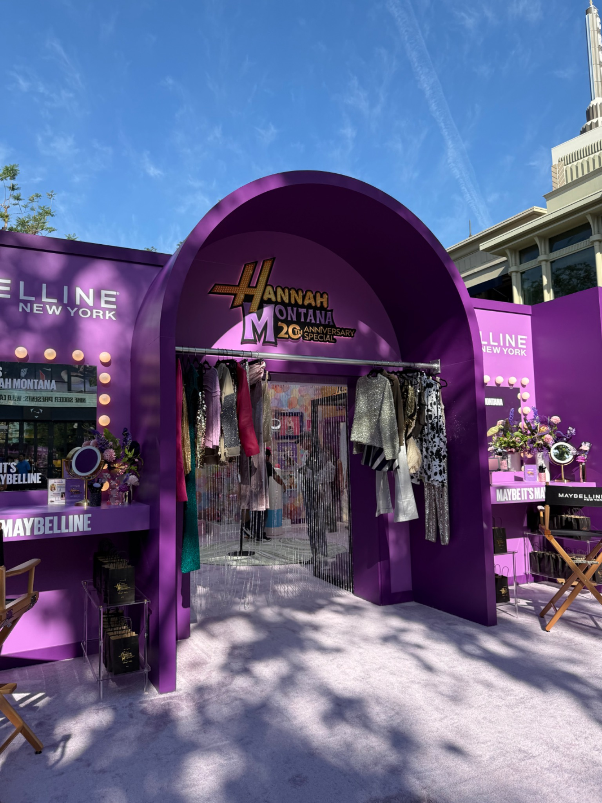
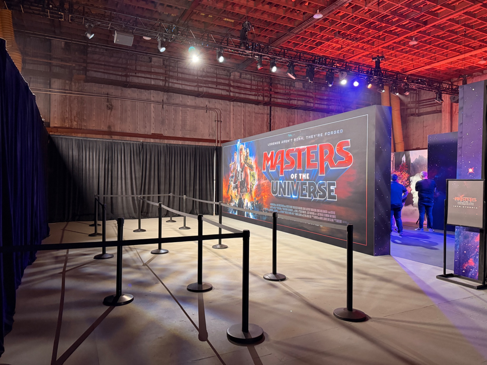

Selected Work
Culture · Entertainment · Brands


Sinners
Symposium
A culturally driven symposium bringing community, talent and entertainment together around Sinners. Executive production spanning environment, programming, talent touchpoints, guest experience and the many invisible systems that make a high-profile moment feel effortless.



CÉCRED
An immersive, premium beauty experience designed around product discovery, community and hands-on brand interaction. A polished guest journey moved from arrival through demonstrations, styling, customization and social moments without losing the intimacy of the brand.



Worlds
Made Real
From fan-first entertainment launches to talent-led cultural moments, I build physical worlds around ideas people already care about. The work sits where creative, content, fabrication, hospitality, technical production and live operations all meet.

Luxury & Automotive
Destination · Hospitality · Driving Experiences